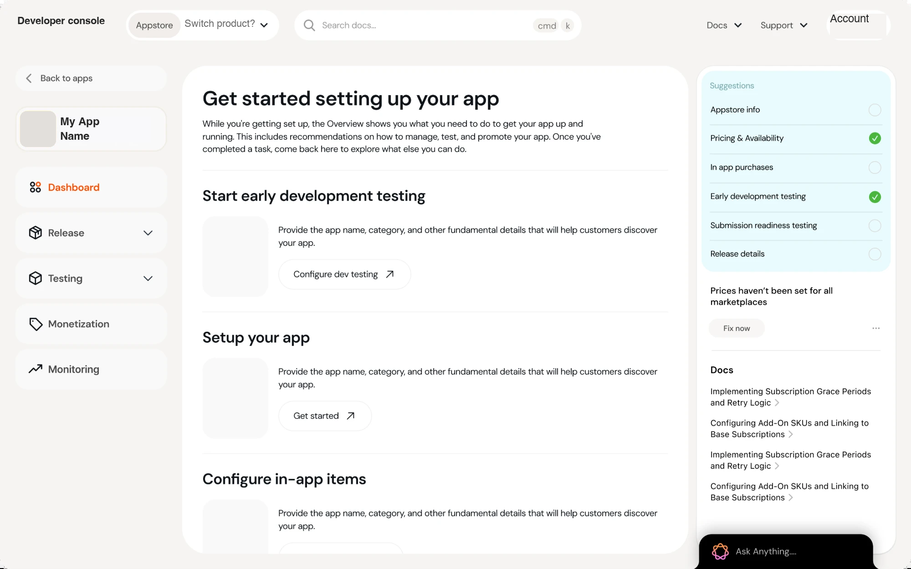

Solution
Phase 1 · Unblock
The four-step sequence gave way to a persistent navigation (Publish, Monetize, Test, Services). App setup became one hub, with Release tracks beside it and one lane per OS. Each lane has its own “Create a release” action, so starting one platform’s release never waits on another. Staged roll-out became a column in the table developers already read, not a feature to discover.

Phase 2 · Let the track own its content
Creating a track became two choices: pick the platform, then the device types, as one combined release or a track per device type. Each track is now an object with its own store listing, releases and release history. A section index and field-level guidance keep long forms navigable.


Phase 3 · Rebuild around the developer
A console organised by jobs (Dashboard, Release, Testing, Monetization, Monitoring) rather than by forms, with a dashboard that answers “what should I do now?”, guidance beside the task, and a new design system matched to the marketplace’s devices. Design in progress, not shipped.
